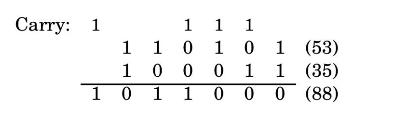

One of the main themes of this chapter is the dramatic contrast between two ancient problems that at first seem very similar:
Factoring: Given a number N, express it as a product of its prime factors.
Primality: Given a number N, determine whether it is a prime.
This introduction highlights two foundational number‐theoretic tasks—breaking a composite number into primes versus simply checking if it's prime—setting up the surprising gap in their computational difficulty.
Factoring is hard. Despite centuries of effort by some of the world's smartest mathematicians and computer scientists, the fastest methods for factoring a number N take time exponential in the number of bits of N.
This paragraph emphasizes that, to date, no algorithm faster than
exponential time is known for factoring large integers—making it a
famously difficult computational challenge.
On the other hand, we shall soon see that we can efficiently test whether N is prime! And (it gets even more interesting) this strange disparity between the two intimately related problems, one very hard and the other very easy, lies at the heart of the technology that enables secure communication in today’s global information environment.
Here the author foreshadows that primality testing admits a
polynomial‐time solution, and that the gap between these two tasks
underpins public‐key cryptography and modern secure
communications.
En route to these insights, we need to develop algorithms for a variety of computational tasks involving numbers. We begin with basic arithmetic, an especially appropriate starting point because, as we know, the word algorithms originally applied only to methods for these problems.
This closing sentence explains that to understand factoring vs.
primality, we’ll first build up efficient arithmetic
routines—recalling that “algorithm” itself once referred only to
numerical methods.
1.1 Basic arithmetic
1.1.1 Addition
We were so young when we learned the standard technique for addition that we would scarcely have thought to ask why it works. But let's go back now and take a closer look.
This introduction reminds us that addition, though second
nature, has a precise underlying rationale—one we’ll now examine
step by step.
It is a basic property of decimal numbers that The sum of any three single-digit numbers is at most two digits long. Quick check: the sum is at most $9+9+9=27$, two digits long. In fact, this rule holds not just in decimal but in any base $b\ge2$ (Exercise 1.1). In binary, for instance, the maximum possible sum of three single-bit numbers is 3, which is a 2-bit number.
Because adding three digits can never exceed the base’s square,
each digit‐wise sum stays within two digits. This fact
generalizes across bases and underpins the carry mechanism.
This simple rule gives us a way to add two numbers in any base: align their right-hand ends, and then perform a single right-to-left pass in which the sum is computed digit by digit, maintaining the overflow as a carry. Since we know each individual sum is a two-digit number, the carry is always a single digit, and so at any given step, three single-digit numbers are added. Here's an example showing the addition 53+35 in binary.
This describes the classic “digit-by-digit plus carry”
algorithm: add corresponding digits plus the incoming carry,
write down the least significant result, and carry the rest to
the next column.
 Figure 1.1: Binary addition of 53 and 35, illustrating carry propagation.
This ASCII illustration shows each column’s sum and carry
propagation when adding 110101 (53) and
100011 (35), yielding 1011000 (88).
Ordinarily we would spell out the algorithm in pseudocode, but in this case it is so familiar that we do not repeat it. Instead we move straight to analyzing its efficiency.
Since the addition routine is universally known, we skip its
formal specification and focus on quantifying its runtime.
Given two binary numbers x and y, how long does our algorithm take to add them? This is the kind of question we shall persistently be asking throughout this book. We want the answer expressed as a function of the size of the input: the number of bits of x and y, the number of keystrokes needed to type them in.
Here we introduce the key idea of input‐size analysis: runtime
expressed in terms of the number of bits in the operands.
Suppose x and y are each n bits long; in this chapter we will consistently use the letter n for the sizes of numbers. Then the sum of x and y is n+1 bits at most, and each individual bit of this sum gets computed in a fixed amount of time. The total running time for the addition algorithm is therefore of the form c0 + c1n, where c0 and c1 are some constants; in other words, it is linear. Instead of worrying about the precise values of c0 and c1, we will focus on the big picture and denote the running time as O(n).
Since each of the n+1 digit‐computations takes
constant time, the total cost grows proportionally to
n, yielding an O(n) algorithm.
Now that we have a working algorithm whose running time we know, our thoughts wander inevitably to the question of whether there is something even better. Is there a faster algorithm? (This is another persistent question.) For addition, the answer is easy: in order to add two n-bit numbers we must at least read them and write down the answer, and even that requires n operations. So the addition algorithm is optimal, up to multiplicative constants!
Because any algorithm must examine every input bit and output
bit, no method can beat Θ(n) time apart from
constant‐factor improvements—so our linear‐time addition is
asymptotically optimal.
Some readers may be confused at this point: Why O(n) operations? Isn't binary addition something that computers today perform by just one instruction? There are two answers. First, it is certainly true that in a single instruction we can add integers whose size in bits is within the word length of today's computers—32 perhaps. But, as will become apparent later in this chapter, it is often useful and necessary to handle numbers much larger than this, perhaps several thousand bits long. Adding and multiplying such large numbers on real computers is very much like performing the operations bit by bit. Second, when we want to understand algorithms, it makes sense to study even the basic algorithms that are encoded in the hardware of today's computers. In doing so, we shall focus on the bit complexity of the algorithm, the number of elementary operations on individual bits—because this accounting reflects the amount of hardware, transistors and wires, necessary for implementing the algorithm.
This clarification distinguishes between machine‐word arithmetic
(constant‐time on fixed‐width registers) and arbitrary‐precision
arithmetic, where cost truly scales with bit length—motivating
our focus on bit‐level operations for algorithmic insight.